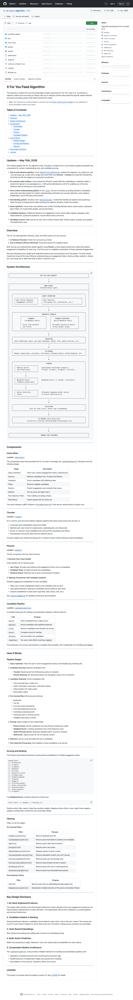

LAZYWEB DESIGN IMPROVE · 2026-07-27
Pulse V6 — 기기별 피드 UX 검토
목표는 예쁜 화면이 아니라, 개인투자자가 새로고침을 반복해도 피드가 "왜 이 순서로 나왔는지" 납득하고 다음 행동을 고르기 쉬운 흐름을 만드는 것입니다.
현재 상태

2026-07-27 운영 후보를 최대 한도로 다시 조회하면 일반 Form 4가 52개, Form 4/A가 1개, 8-K가 7개였습니다. 서버 랭크만 그대로 표시하면 "새 내부자 거래" 한 카드가 첫 화면을 대부분 차지하고, 사용자는 다른 공시·질문·회사 이야기가 없는 것으로 느낍니다.
개선안 1 — 카드가 아니라 ‘화면의 단위’를 선택한다 최우선
동일한 날의 일반 Form 4는 후보로는 각각 보존하되, 화면에서는 하나의 확장 가능한 거래 묶음으로 만듭니다. 묶음은 긴급 항목과 회사 이야기 뒤, 대략 네 번째 시각 항목에 둡니다. 그래서 중요한 거래를 숨기지 않으면서도 첫 스크롤은 여러 이유를 가진 카드로 시작합니다.
1. 긴급/진행 중 분석 (있을 때) 2–3. 회사 이야기 또는 서로 다른 공시 4. 새 내부자 거래 · 27건 중 핵심 3건 + 더 보기 5+. 나머지 8-K / 질문 / 재방문 후보
사용자 반응: “거래가 많네”는 알지만, “오늘 피드가 거래 하나뿐이네”라는 답답함이 줄어듭니다.
개선안 2 — 첫 파티 기기 ID로만 ‘작은 기억’을 둔다
저장하는 것
- 무작위 기기 ID (쿠키 + localStorage)
- 카드별 마지막 조회 세대와 열기/저장 여부
- 티커·유형별 약한 선호 점수
- 회사 이야기의 현재 고정 카드
저장하지 않는 것
- 카드 본문이나 공시 원문
- 서버 DB의 개인 추천 이력
- 다른 기기로 동기화되는 프로필
- 로그인 계정을 가로지르는 추적 ID
기기가 바뀌거나 브라우저 저장소를 지우면 기기 프로필은 깨끗하게 초기화됩니다. 이는 이 피드에서는 허용 가능한 선택입니다. 새 기기에서도 서버의 기본 우선순위와 안전 필터는 동일하므로, 개인화만 0에서 다시 시작합니다. 쿠키/저장소가 차단돼 안정적인 기기 ID를 만들 수 없는 경우에도 이전 프로필을 재사용하지 않고 같은 기본 순서로 폴백합니다.
쿠키/로컬 기기 ID
↓
기기별 프로필: 조회 세대 · 열기 · 저장 · 약한 선호
↓
서버가 승인한 후보 48개를 ‘표시 단위’로 재정렬
↓
브라우저 안에서만 저장 (Supabase 개인 행동 쓰기 없음)
개선안 3 — ‘본 것’과 ‘소비한 것’을 분리한다
스크롤로 1초 보인 것은 view이고, 공시/리서치를 열거나 저장한 것은 consume/open입니다. 전자는 카드를 즉시 제거하지 않습니다. 사용자가 이 차이를 체감해야 피드가 “내가 읽기도 전에 바뀌었다”는 느낌을 주지 않습니다.
| 행동 | 즉시 결과 | 다음 새로고침 결과 |
|---|---|---|
| 카드를 잠깐 봄 | 현재 위치 고정 | 같은 회사 이야기는 한 번 더 유지; 무작위 소멸 없음 |
| 회사 이야기를 보고 새로고침 | 현재 내용은 유지 | 최근 두 번에 본 이야기를 우선 제외해, 후보가 충분하면 세 번 연속 다른 이야기로 교체 |
| 회사 이야기를 열어 읽음 | 관심 신호만 약하게 반영 | 해당 이야기는 7일간 휴식, 다른 이야기 우선 |
| 일반 카드를 세 번의 의도적 새로고침에 걸쳐 무반응으로 봄 | 세 번째 조회 전까지 유지 | 7일간 뒤로 물러나며 다른 후보가 백필 |
| 자동 폴링/새 업데이트 배지 | 보던 피드 불변 | 사용자가 직접 갱신할 때만 세대 전환 |
운영 데이터 기준 시뮬레이션
| 조건 | V6 첫 화면의 동작 | 사용자에게 보이는 이유 |
|---|---|---|
| 현재 운영 · Form 4 53 / 8-K 7 · 활성 이야기 32개 | 8-K 1개 → 회사 이야기 1개 → 8-K 1개 → 내부자 거래 묶음 1개 → 나머지 8-K (약 9개 시각 항목) | Form 4 12건은 확장 가능한 한 묶음이며, 이야기는 2~3번째에만 하나 배치 |
| 활성 이야기 16개 후보 · AAPL 우선순위 10, 나머지 0 | AAPL은 최대 5배 가중치로 더 자주 선택되지만 모든 기기에 고정되지 않음 | 우선순위는 편집 통제 신호이되, 개인투자자에게는 첫 카드가 매번 광고처럼 느껴지지 않음 |
| 활성 회사 스토리 없음 | 8-K와 Form 4 묶음을 유지하고, 일반 학습 카드만 백필 | 없는 회사 이야기를 꾸며내지 않으며 유용한 첫 스크롤을 유지 |
| 스토리를 본 뒤 수동 새로고침 | 다른 스토리 1개로 교체. 후보가 하나라면 그대로 유지 | 새로움은 주되, 빈자리나 가짜 반복을 만들지 않음 |
| 자동 폴링 / 새 업데이트 배지 확인 전 | 현재 슬레이트 유지 | 읽던 카드의 위치가 스스로 바뀌지 않음 |
| 다른 기기 / 시크릿 창 | 개인화와 조회 이력은 0에서 시작 | 기기 간 섞임 없이 기본 랭크와 다양성만 적용 |
남아 있는 데이터 제약:
현재 운영에는 Pulse용 활성 회사 스토리 배포가 32건 있으므로 이야기는 후보에 들어옵니다. 다만 후보 RPC 자체가 Form 4 중심이면 화면은 좋아져도 비-Form 4의 절대 수는 늘지 않습니다. 다음 단계에서는 서버 후보 수집 단계에서 Form 4/비-Form 4 최소 쿼터를 보장하는 것이 맞습니다.X 알고리즘에서 가져온 원칙, 가져오지 않은 것

공개 xAI 피드 파이프라인의 후보 수집 → 보강 → 필터 → 점수 → 다양성 → 후처리 → 부수효과 순서를 이 프로젝트의 작은 규칙 기반 모델에 적용했습니다. 특히 ‘이미 보인 항목’과 ‘제공 이력’을 컨텍스트로 두고, 다양성을 점수 뒤에 적용하는 구조를 참고했습니다.
다만 X처럼 행동 시퀀스를 서버 ML 모델로 만들지는 않습니다. 투자 공시 피드는 후보 풀이 작고 근거·안정성이 중요하므로, 현재 단계에서는 설명 가능한 기기별 규칙과 명시적 쿨다운이 더 적합합니다.
잘 유지할 점
- 공시 원문과 활성 분석은 최상단 우선순위를 유지한다.
- 내부자 거래를 제거하지 않고, 필요하면 한 묶음에서 모두 확장할 수 있게 둔다.
- 자동 업데이트가 읽는 중인 피드를 다시 섞지 않게 한다.
- 기기 저장소에는 최소한의 점수와 이력만 보관한다.